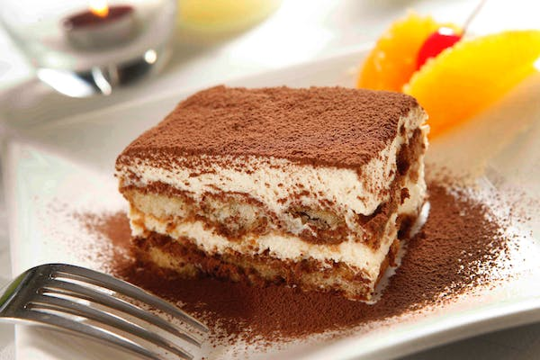

Tiramisu

Indulge in the divine taste of Tiramisu, a classic Italian dessert that offers a rich blend of flavors.
A velvety layer of mascarpone cheese paired with espresso-drenched ladyfingers, all dusted with a generous layer of cocoa powder. The perfect balance of sweetness and bitterness will leave your palate craving for more. It's a luxurious dessert that's sure to impress at any dinner party.
- 6 egg yolks
- 3/4 cup white sugar
- 2/3 cup milk
- 1 1/4 cups heavy cream
- 1/2 teaspoon pure vanilla extract
- 8 ounces mascarpone cheese
- 1 cup strong brewed coffee, room temperature
- 2 tablespoons rum (optional)
- 2 packages ladyfinger cookies
- 2 tablespoons unsweetened cocoa powder
- In a medium saucepan, whisk together egg yolks and sugar until well blended. Add in milk and cook over medium heat, stirring constantly until it boils. Boil gently for 1 minute, then remove from heat and allow to cool slightly.
- Whip heavy cream with vanilla until stiff peaks form. Beat in mascarpone until combined.
- Dip each ladyfinger into the coffee (and rum if using), and layer in the bottom of a serving dish. Spread half of the mascarpone mixture over the ladyfingers. Repeat with remaining cookies and mascarpone.
- Dust the top layer with the cocoa powder using a sieve.
- Cover and refrigerate for at least 2 hours, up to 8 hours before serving. This allows the flavors to meld together.